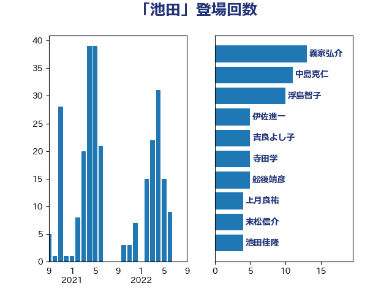

単語「池田」

| 義家弘介 | 自由民主党 | 13 回 |
| 中島克仁 | 立憲民主党 | 11 回 |
| 浮島智子 | 公明党 | 10 回 |
| 伊佐進一 | 公明党 | 5 回 |
| 吉良よし子 | 日本共産党 | 5 回 |
| 寺田学 | 立憲民主党 | 5 回 |
| 舩後靖彦 | れいわ新選組 | 5 回 |
| 上月良祐 | 自由民主党 | 4 回 |
| 末松信介 | 自由民主党 | 4 回 |
| 池田佳隆 | 自由民主党 | 4 回 |
| 細田博之 | 自由民主党 | 4 回 |
| 高木毅 | 自由民主党 | 4 回 |
| 勝部賢志 | 立憲民主党 | 3 回 |
| 斎藤洋明 | 自由民主党 | 3 回 |
| 自見はなこ | 自由民主党 | 3 回 |
| 阿部弘樹 | 日本維新の会 | 3 回 |
| 高野光二郎 | 自由民主党 | 3 回 |
| 中根一幸 | 自由民主党 | 2 回 |
| 伊藤孝恵 | 国民民主党 | 2 回 |
| 古川禎久 | 自由民主党 | 2 回 |
| 嘉田由紀子 | 無所属 | 2 回 |
| 堀場幸子 | 日本維新の会 | 2 回 |
| 堤かなめ | 立憲民主党 | 2 回 |
| 太田房江 | 自由民主党 | 2 回 |
| 山口俊一 | 自由民主党 | 2 回 |
| 山田賢司 | 自由民主党 | 2 回 |
| 岸田文雄 | 自由民主党 | 2 回 |
| 杉田水脈 | 自由民主党 | 2 回 |
| 根本匠 | 自由民主党 | 2 回 |
| 森田俊和 | 立憲民主党 | 2 回 |
| 熊野正士 | 公明党 | 2 回 |
| 牧原秀樹 | 自由民主党 | 2 回 |
| 田畑裕明 | 自由民主党 | 2 回 |
| 石垣のりこ | 立憲民主党 | 2 回 |
| 篠原孝 | 立憲民主党 | 2 回 |
| 萩生田光一 | 自由民主党 | 2 回 |
| 葉梨康弘 | 自由民主党 | 2 回 |
| 金子恭之 | 自由民主党 | 2 回 |
| 階猛 | 立憲民主党 | 2 回 |
| 上川陽子 | 自由民主党 | 1 回 |
| 上杉謙太郎 | 自由民主党 | 1 回 |
| 伊藤忠彦 | 自由民主党 | 1 回 |
| 原口一博 | 立憲民主党 | 1 回 |
| 堂故茂 | 自由民主党 | 1 回 |
| 塩村あやか | 立憲民主党 | 1 回 |
| 宮崎政久 | 自由民主党 | 1 回 |
| 小池晃 | 日本共産党 | 1 回 |
| 小沼巧 | 立憲民主党 | 1 回 |
| 岡田克也 | 立憲民主党 | 1 回 |
| 島尻安伊子 | 自由民主党 | 1 回 |
| 川合孝典 | 国民民主党 | 1 回 |
| 川崎ひでと | 自由民主党 | 1 回 |
| 後藤祐一 | 立憲民主党 | 1 回 |
| 徳永エリ | 立憲民主党 | 1 回 |
| 木原誠二 | 自由民主党 | 1 回 |
| 柚木道義 | 立憲民主党 | 1 回 |
| 柳ヶ瀬裕文 | 日本維新の会 | 1 回 |
| 横山信一 | 公明党 | 1 回 |
| 武田良太 | 自由民主党 | 1 回 |
| 池畑浩太朗 | 日本維新の会 | 1 回 |
| 沢田良 | 日本維新の会 | 1 回 |
| 泉健太 | 立憲民主党 | 1 回 |
| 海江田万里 | 立憲民主党 | 1 回 |
| 渡辺博道 | 自由民主党 | 1 回 |
| 猪口邦子 | 自由民主党 | 1 回 |
| 田村憲久 | 自由民主党 | 1 回 |
| 石井苗子 | 日本維新の会 | 1 回 |
| 石川昭政 | 自由民主党 | 1 回 |
| 神谷裕 | 立憲民主党 | 1 回 |
| 紙智子 | 日本共産党 | 1 回 |
| 薗浦健太郎 | 自由民主党 | 1 回 |
| 藤原崇 | 自由民主党 | 1 回 |
| 藤川政人 | 自由民主党 | 1 回 |
| 西岡秀子 | 国民民主党 | 1 回 |
| 豊田俊郎 | 自由民主党 | 1 回 |
| 赤羽一嘉 | 公明党 | 1 回 |
| 足立敏之 | 自由民主党 | 1 回 |
| 逢坂誠二 | 立憲民主党 | 1 回 |
| 鈴木俊一 | 自由民主党 | 1 回 |
| 鈴木英敬 | 自由民主党 | 1 回 |
| 鈴木馨祐 | 自由民主党 | 1 回 |
| 馬淵澄夫 | 立憲民主党 | 1 回 |
| 高鳥修一 | 自由民主党 | 1 回 |
| 麻生太郎 | 自由民主党 | 1 回 |